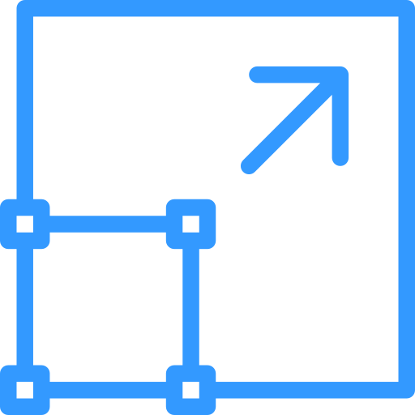

Солнечные панели для дачи
Оптимальные солнечные панели, которые будут на 100% соответствовать вашим задачам.

Масштабируемость
Нужно больше мощности? Легко! Система легко расширяется

Готовые комплекты
Солнечных панелей электростанций, идеальные для дачных и садовых домов
Решение "под ключ"
Всё в комплекте: от крепежа и проводов
до контроллера и аккумуляторов